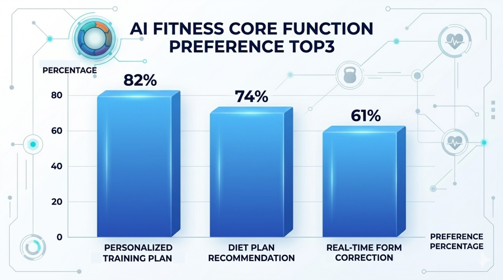
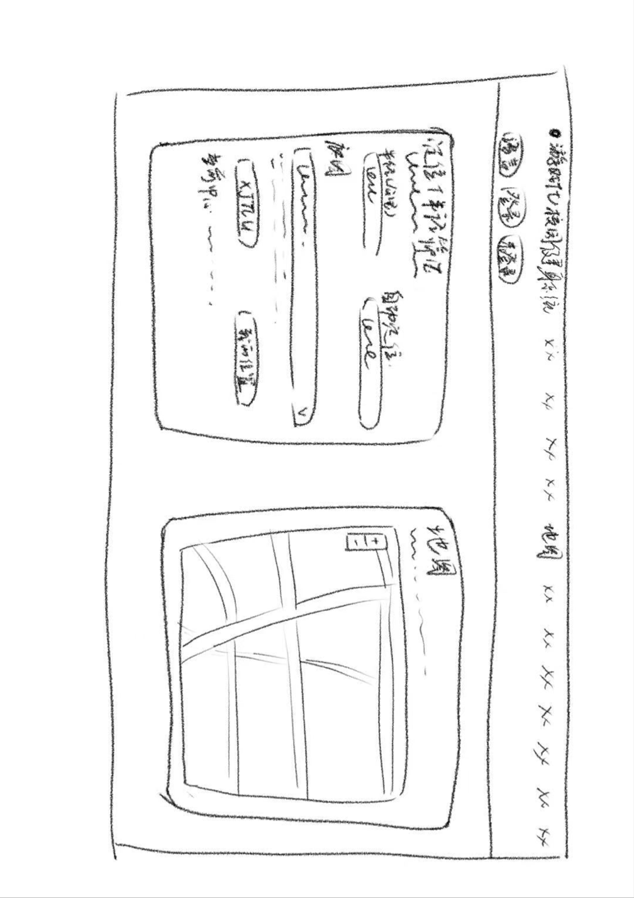
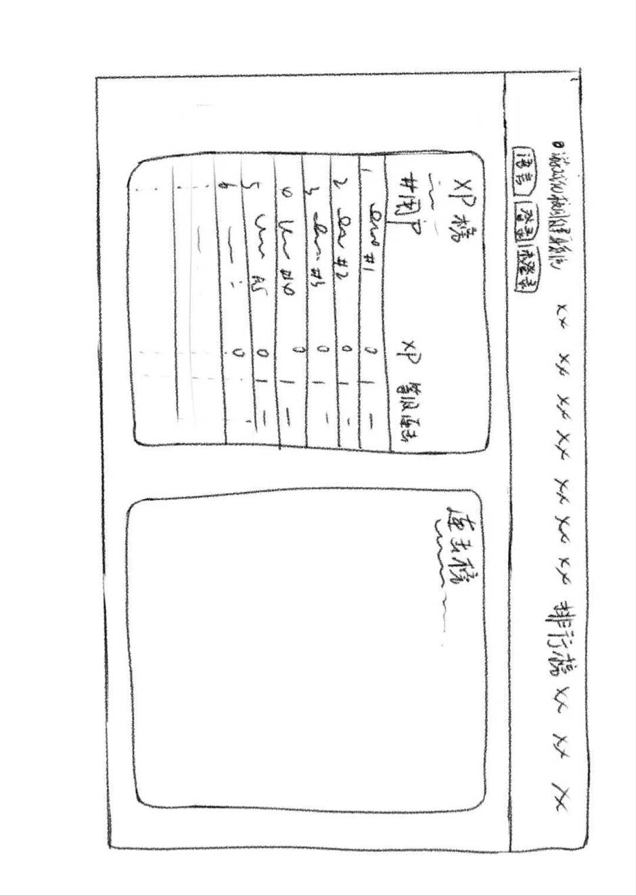
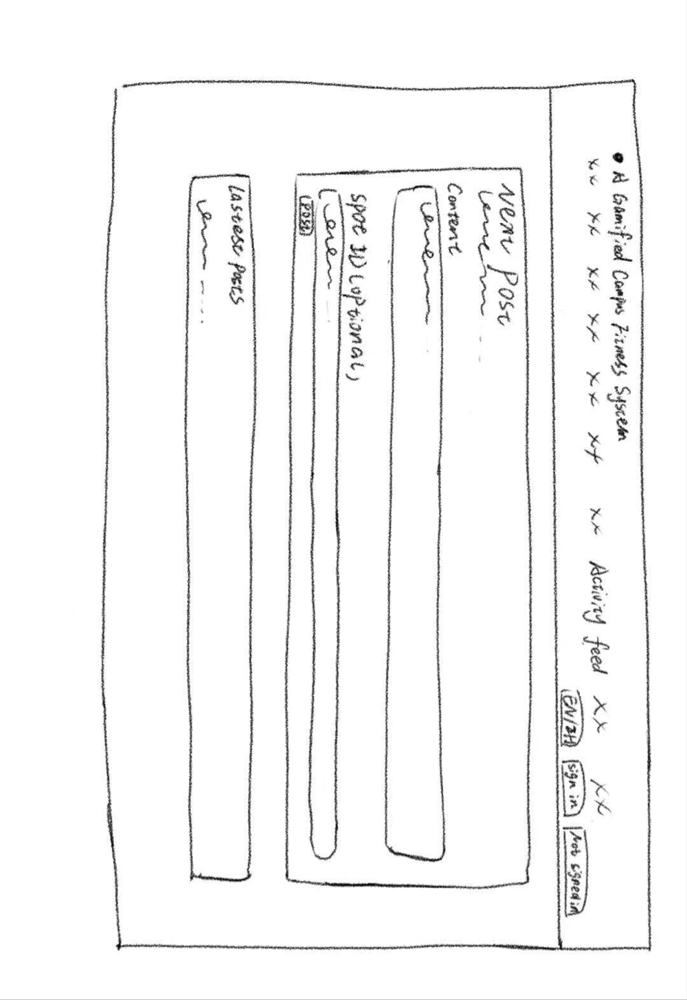
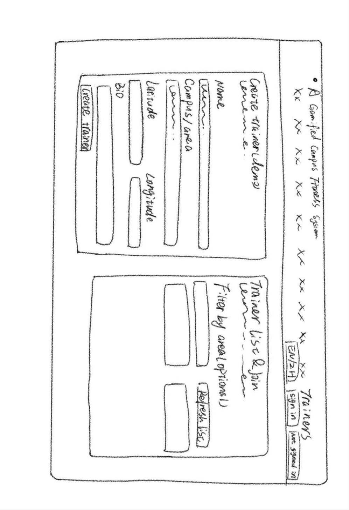

Pure functional management mode
This mode focuses on exercise statistics, sports management and record functions. It is simple and stable, but lacks fun, incentive mechanisms and long-term user attraction.
The design stage compares alternative directions and selects a balanced solution that combines gamified incentive, personalized guidance and lightweight social integration.
Quick hand-drawn UI sketches helped explore multiple interface directions before committing to a final product structure.

Three design schemes were compared to identify the best fit for campus fitness behavior, usability and project positioning.
This mode focuses on exercise statistics, sports management and record functions. It is simple and stable, but lacks fun, incentive mechanisms and long-term user attraction.
This mode emphasizes social interaction, challenge PK and community sharing. It can attract users short term, but may weaken professional guidance and fitness outcomes.
The final solution combines low-threshold check-ins, gamified incentive, AI professional guidance and lightweight social modules.
It forms a closed loop from exercise initiation to motivation maintenance and long-term retention while balancing fun, practicality and professionalism.
The low-fidelity prototype presents the core operation flow and page interaction logic, supporting early validation of layout structure and feature placement.



